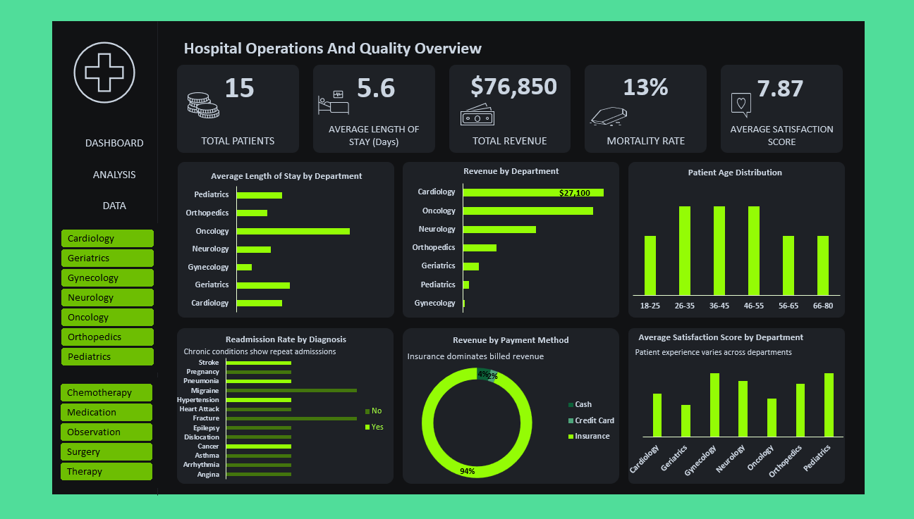
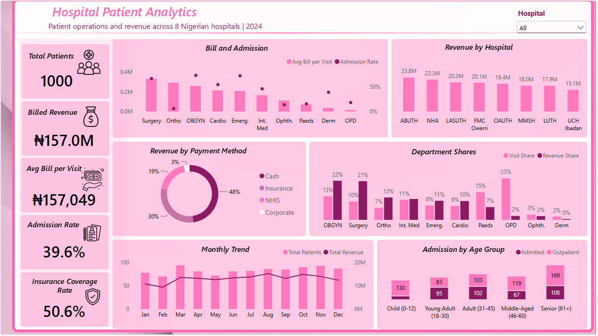

My Projects

Global STI Disease Surveillance to identify where Intervention Coverage Fails to Match Disease Burden
This project analyzed 11 years of infectious disease surveillance data across 12 countries to identify which populations, regions, and diseases represent the highest-priority gaps between disease burden and treatment access. The analysis found that HIV/AIDS account for largest share of death, and Africa as a region tests less than 60% of its at-risk population, this suggests testing infrastructure is the binding constraint. It also found that vaccination programs for HPV and Hepatitis B only show a measurable effect on new infections.

Hospital Operations Analysis to Identify Where Cost, Readmission, and Mortality Risk Concentrate Across Departments
A hospital needed a first look at how cost, outcomes, and patient experience were spread across its departments before investing in a larger analytics build. This project analyzed 15 synthetic patient encounters across 7 departments using Excel PivotTables and an Excel dashboard. The analysis found that Cardiology and Oncology generated 68% of total revenue, and that both recorded deaths occurred among readmitted patients. It also found that Geriatrics scored lowest on patient satisfaction, at 5 out of 10 against an average of 7.87.

Hospital Patient Analytics to Identify Where Revenue Concentrates and Who Pays Across 8 Nigerian Hospitals
Hospital managers needed a clearer view of how revenue, payment, and admissions were spread across departments and hospitals. This project analyzed 1,000 synthetic patient visits from eight Nigerian hospitals using Excel for data cleaning and Power BI for analysis and the dashboard. The analysis found that Obstetrics & Gynaecology and Surgery produced 43% of revenue from 23% of visits, and that cash payers made up 48% of revenue. It also flagged 67 billing records that did not match admission status and needed an audit.